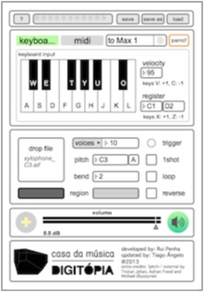

Digitopia's software
DigiSampler is a simple and intuitive virtual sampler that allows you to quickly grab a sound file and start playing. It is a modified version of "Simpler" by Rui Penha.
DigiSimpler is free software: you can redistribute it and/or modify it under the terms of the GNU General Public License as published by the Free Software Foundation, either version 3 of the License, or (at your option) any later version.
You can @mention a GitHub username to generate a link to their profile. The resulting <a> element will link to the contributor’s GitHub Profile. For example: In 2007, Chris Wanstrath (@defunkt), PJ Hyett (@pjhyett), and Tom Preston-Werner (@mojombo) founded GitHub.
Extra credits:
If you're experiencing any problem with the software please check the manual first. For any other questions you can contact Sonorium support or Digitópia — Casa da Música.
Thanks for your preference!